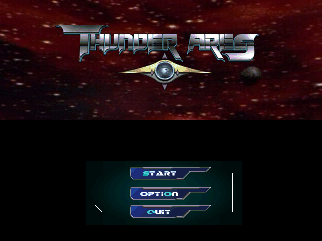
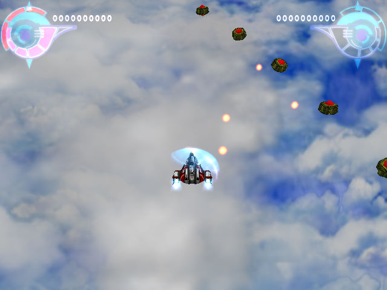

名稱：雷神戰機／雷霆行動 (Thunder Ares，中文版)
簡介：旭聯2003年出品的垂直捲軸射擊遊戲，由智冠代理發行。雖是台灣自製遊戲，但遊戲
內均使用英文，只有環境設定程式有中文 [待補]。


保護：光碟，破解碼：
TA.exe
75 18 8B 4C 24 10 D1 EB 41
EB -- -- -- -- -- -- -- --
25 63 3A 5C
2E 5C 2E --
備註：非安裝移機者，需設定下列Registry：
[HKEY_LOCAL_MACHINE\SOFTWARE\SUNNET\TA]
[HKEY_LOCAL_MACHINE\SOFTWARE\WOW6432Node\SUNNET\TA]
"INSTALLDIR"="."
"SETTING"=hex:14,22,21,23,2c,2d,2e,48,50,4b,4d,d3,cf,d1,00,01,02,00,01,02,00,01,02,00,01,02,04,05,00
"FLAG"=hex:00